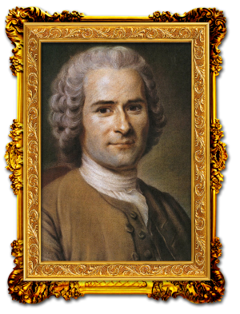
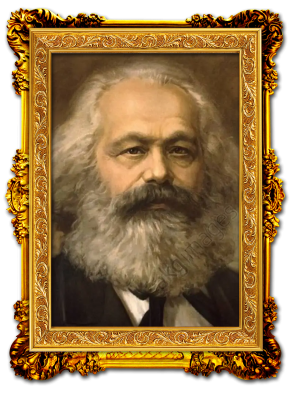
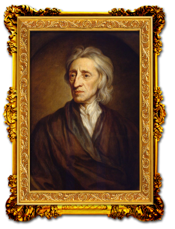
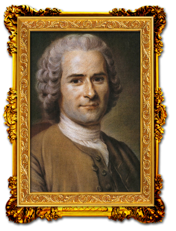
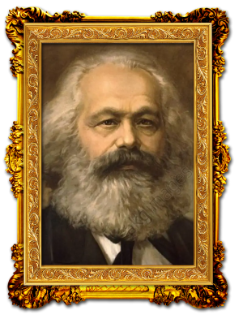
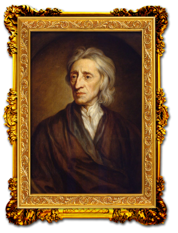
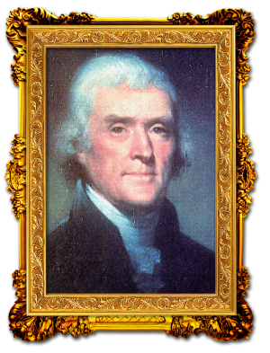
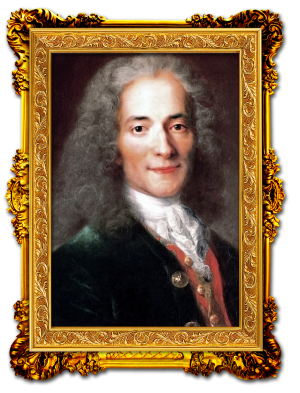
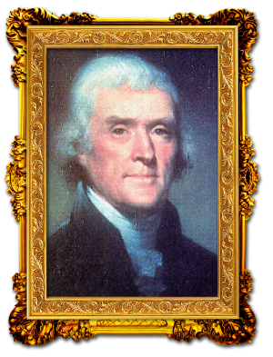
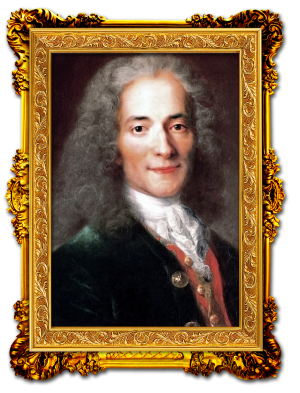

História do Trabalho
Antecedendo a inusitada ideia de Aristóteles, o filósofo grego Hesíodo, defendia que: a luta e a conquista deveriam fundar-se na justiça e no trabalho. O trabalho agradava aos deuses (criava recursos e consideração social), fazia os homens independentes e afamados. A alma, ao desejar riquezas, nos impulsiona ao trabalho. Daí até o conceito moderno de trabalho como um processo que tem como objetivo lucrar produzindo algo ou vendendo-o, como o define Arnaldo Sussekind, vai um longo caminho.
As concepções mais simples do que seja o trabalho têm por padrão a sua naturalização, ou seja, elas o retiram do seu contexto propriamente histórico e o definem genericamente como gasto de energia ou como ação de transformação da natureza. Tais concepções acabam por compreender que, nas sociedades mais complexas, o trabalho se tornou apenas mais carregado de conteúdo tecnológico. Ou seja, a história é vista como um crescente linear de mais técnica, conhecimento e ciência e menos trabalho e esforço. E os homens na história seriam meros resultados de forças que agem acima deles próprios, como somatório de suas ações individuais.
Nas concepções mais complexas do trabalho, o seu conteúdo material é parte de um processo social maior, de uma história que contrapõe os homens e seus interesses e lhes condiciona o fazer - de uns e outros - de modo bastante diferenciado. O trabalho de "um Aristóteles" pensando sobre o trabalho, a virtude, a riqueza, pesquisando e ensinando, tem muito pouco a ver com o de um agricultor de sua época. Assim como, para que e para quem os homens trabalham, se eles são obrigados a trabalhar para outros ou se eles o fazem livremente, se trabalham em troca de algo específico ou de uma cota, parte da riqueza geral criada (como ocorre nas sociedades mercantis onde todos produzem para o mercado), irá variar no tempo e no espaço.
Uma definição mais complexa do trabalho é dada por aqueles que acreditam, como Karl Marx e Friedrich Engels, principalmente) que este é um elemento definidor do próprio ser do homem ou sua dimensão ontológica. Ontologicamente falando, o trabalho seria definidor do ser uma vez que gera as condições reais de sua possibilidade de existência. Ou, dito de outro modo, o trabalho se inseriria numa relação de mediação entre o sujeito e o objeto do seu carecimento.[8] Essa definição tem por mérito justamente não se esgotar dentro da naturalidade do ser, pois mudam ao longo da história os objetos do carecimento humano tanto quanto os modos destes serem satisfeitos.
Enfim, o conceito de trabalho é um conceito histórico, é ao longo da história que vão se colocando novas determinações para este conceito. Assim, a forma como os homens se organiza, como a divisão do trabalho, para produzir difere de época para época e tanto o modo geral como eles se articulam como os conteúdos específicos dos diferentes trabalhos irão mudar e exigir novas nomeações. Assim é que, no mundo moderno, dizer que o trabalho é trabalho assalariado, acrescentando-lhe assim um qualitativo, é dizer o principal do trabalho num certo tempo e lugar. É dizer que, apenas nas sociedades mercantis desenvolvidas, é que se transformam não apenas os produtos do trabalho em mercadorias, mas o próprio trabalho. Explicita-se assim o que é o trabalho no interior das unidades produtivas, na sociedade como um todo e no conjunto das próprias concepções que fazem dele os [indivíduos aí participantes.
A proposição do modo de organização do trabalho como sendo a base para a organização da sociedade em seu conjunto (poder, religião, saber, etc.) provem de uma leitura materialista-histórica da realidade, de base marxista. Trata-se esta da crítica filosófica ao idealismo alemão de Hegel e outros que não levavam em consideração o trabalho em geral, mas o trabalho da razão em particular, para a compreensão da lógica de desenvolvimento da história. Essa concepção do trabalho como elemento fundante da história é crítica também da economia política inglesa (Adam Smith e David Ricardo). Nestes, o trabalho aparece como elemento importante por trás dos preços das mercadorias, mas não como base daquela organização social que nos torna produtores mercantis.
Há pois mais de um debate em torno do conceito de trabalho, e este cresceu na medida em que este se tornou, na modernidade, objeto da reflexão da economia, da sociologia, da antropologia, da psicologia, da administração, entre outras disciplinas acadêmicas.
Hoje, já passados os tempos chamados da modernidade, coincidentes com o surgimento do modo de produção capitalista, do trabalho assalariado, da democracia burguesa, do individualismo, do emprego, que nos fizeram acostumar com uma certa compreensão do que fosse o trabalho e o seu/nosso mundo, muitas são as transformações que atingem a ambos. No rastro dessas transformações, muitos autores chegam a anunciar o fim do trabalho (Offe), ou pelo menos do emprego (Rifkim), ou o surgimento do trabalho autônomo e do tempo livre em lugar daquele feito para outrem (Gorz), ou o surgimento de um trabalho tido como "imaterial" (Antonio Negri), entre tantas novas determinações.
Penso eu que, apesar de estarmos na era do conhecimento, ainda existem algumas empresas e alguns empresários cujos ambientes de trabalho são como locais de tortura, assim como existem alguns trabalhadores tristes por estarem em setores que não condizem com sua vocação. Talvez, se as empresas ou organizações realizassem um teste vocacional com os seus funcionários ainda durante a fase de recrutamento, muitos sentimentos como esse seriam evitados. Será que gostamos do que fazemos ou simplesmente trabalhamos para garantir o sustento de nossas famílias? Levantamos pela manhã e fazemos o que gostamos ou vamos dormir à noite cheio de conflitos por ter passado o dia no tripalium?

 


